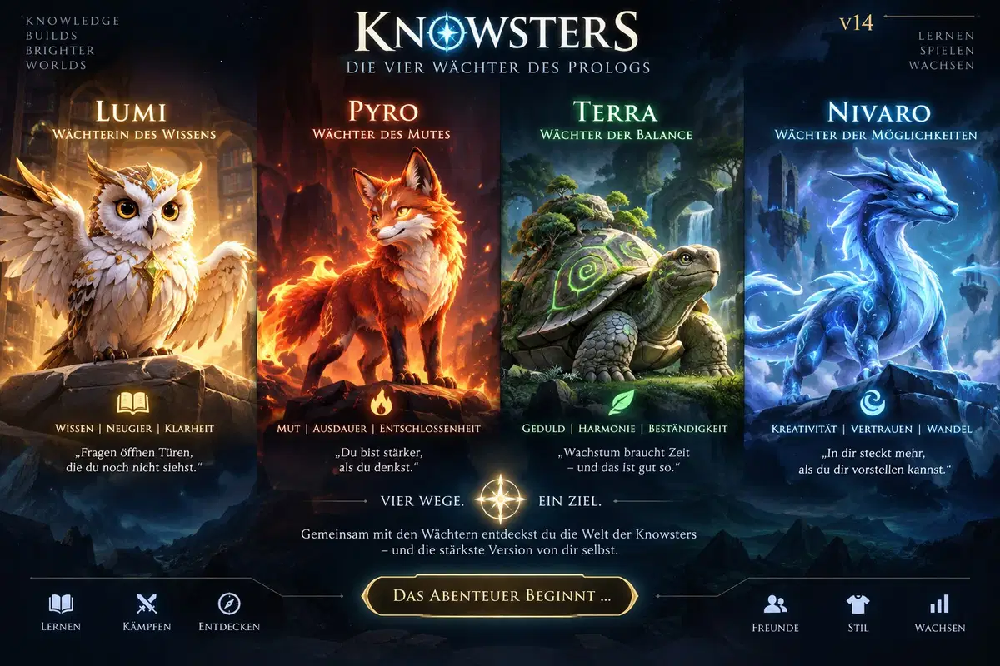

KNOWSTERS
Urban Pulse · v22
v22 führt storyabhängige Kampfbühnen ein und bettet das taktische Feld stärker in die Welt von Knowsters ein.

v22 führt storyabhängige Kampfbühnen ein und bettet das taktische Feld stärker in die Welt von Knowsters ein.